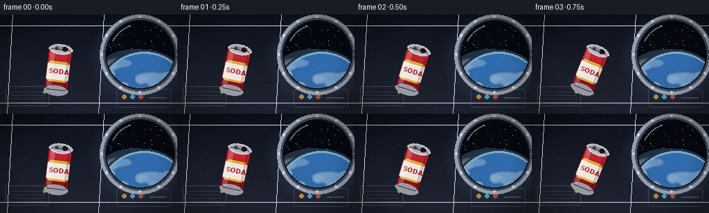
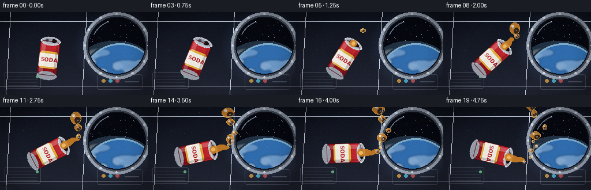

CODING AGENTS AS PIXEL WORLD MODELS
traex/Seed-2.1-Pro-0915 · phygen_005
点击播放 · 原生 RGB 像素
逐轮保存的候选
回放视频、检查图与代码变化。
每份候选均可单独播放。实际图片检查记录在下方工具轨迹中。
候选 01播放与检查图
点击播放 · 原生 RGB 像素


展开代码变化
--- 上一保存版本
+++ 本次保存版本
@@ -0,0 +1,376 @@
+"""Procedural text-to-video generator.
+
+Scene: a soda can slowly pours in zero gravity inside a space station.
+The amber stream pinches into glossy floating blobs that drift, wobble and
+coalesce, instead of falling. Everything is drawn with numpy + PIL only.
+"""
+import math
+from pathlib import Path
+
+import numpy as np
+from PIL import Image, ImageDraw, ImageFilter, ImageFont
+
+import artifact_io
+
+W, H, N, FPS = 256, 144, 20, 4.0
+CASE_DIR = Path(__file__).parent
+
+rng = np.random.default_rng(20261110)
+
+
+# ---------------------------------------------------------------- backgrounds
+def make_background():
+ """Static cabin background as an RGB array."""
+ yy, xx = np.mgrid[0:H, 0:W].astype(np.float32)
+ top = np.array([14, 18, 28], np.float32)
+ bot = np.array([34, 38, 52], np.float32)
+ img = top[None, None] + (bot - top)[None, None] * (yy / H)[..., None]
+
+ # Cool soft glow centred on the porthole.
+ d = np.sqrt(((xx - 202) / 78.0) ** 2 + ((yy - 62) / 70.0) ** 2)
+ glow = np.clip(1 - d, 0, 1)[..., None]
+ img += glow * np.array([26, 40, 60], np.float32)
+ img = np.clip(img, 0, 255).astype(np.uint8)
+ frame = Image.fromarray(img, "RGB").convert("RGBA")
+ draw = ImageDraw.Draw(frame)
+
+ # Wall panel seams and utilitarian cabin details.
+ seam = (210, 220, 235, 26)
+ for x in (18, 150):
+ draw.line([(x, 0), (x - 8, H)], fill=seam, width=1)
+ for y in (16, 128):
+ draw.line([(0, y), (W, y)], fill=seam, width=1)
+ panel = Image.new("RGBA", (W, H), (0, 0, 0, 0))
+ pd = ImageDraw.Draw(panel)
+ pd.rounded_rectangle([8, 104, 70, 132], 3, outline=(190, 200, 215, 60), width=1)
+ for i in range(4):
+ pd.line([(14, 112 + i * 5), (64, 112 + i * 5)], fill=(190, 200, 215, 35))
+ pd.ellipse([62, 110, 66, 114], fill=(120, 220, 150, 180))
+ pd.rounded_rectangle([168, 108, 246, 134], 3, outline=(190, 200, 215, 55), width=1)
+ for i, c in enumerate(((230, 170, 70), (90, 200, 230), (220, 90, 90))):
+ pd.ellipse([176 + i * 12, 116, 182 + i * 12, 122], fill=c + (190,))
+ pd.line([(216, 120), (240, 120)], fill=(190, 200, 215, 70), width=2)
+ frame = Image.alpha_composite(frame, panel)
+
+ # --- Porthole with Earth outside ----------------------------------------
+ cx, cy, cr = 202, 58, 50
+ win = Image.new("RGBA", (W, H), (0, 0, 0, 0))
+ wd = ImageDraw.Draw(win)
+ wd.ellipse([cx - cr - 8, cy - cr - 8, cx + cr + 8, cy + cr + 8],
+ fill=(150, 160, 175, 255))
+ wd.ellipse([cx - cr - 3, cy - cr - 3, cx + cr + 3, cy + cr + 3],
+ fill=(70, 78, 92, 255))
+ wd.ellipse([cx - cr, cy - cr, cx + cr, cy + cr], fill=(6, 8, 16, 255))
+
+ # Stars, visible in the space sliver above the Earth limb.
+ sr = np.random.default_rng(7)
+ for _ in range(70):
+ sx = cx + (sr.random() * 2 - 1) * (cr - 2)
+ sy = cy + (sr.random() * 2 - 1) * (cr - 2)
+ if (sx - cx) ** 2 + (sy - cy) ** 2 < (cr - 2) ** 2 and sy < cy - 6:
+ b = int(120 + 130 * sr.random())
+ wd.point((sx, sy), fill=(b, b, min(255, b + 20), 255))
+
+ # Earth, clipped to the porthole circle.
+ earth = Image.new("RGBA", (W, H), (0, 0, 0, 0))
+ ex, ey, er = cx + 6, cy + 62, 66
+ ed = ImageDraw.Draw(earth)
+ ed.ellipse([ex - er, ey - er, ex + er, ey + er], fill=(26, 86, 158, 255))
+ shade = Image.new("RGBA", (W, H), (0, 0, 0, 0))
+ sd = ImageDraw.Draw(shade)
+ sd.ellipse([ex - er + 10, ey - er + 6, ex + er - 6, ey + er - 14],
+ fill=(52, 122, 190, 130))
+ sd.ellipse([ex - er - 6, ey - er - 4, ex + er * 0.7, ey + 10],
+ fill=(120, 180, 220, 60))
+ earth = Image.alpha_composite(earth, shade)
+ clouds = Image.new("RGBA", (W, H), (0, 0, 0, 0))
+ cd = ImageDraw.Draw(clouds)
+ crng = np.random.default_rng(11)
+ for _ in range(26):
+ cxc = ex + (crng.random() * 2 - 1) * er * 0.9
+ cyc = ey + (crng.random() * 2 - 1) * er * 0.85
+ rwx = 8 + crng.random() * 20
+ rwy = 2.5 + crng.random() * 5
+ cd.ellipse([cxc - rwx, cyc - rwy, cxc + rwx, cyc + rwy],
+ fill=(235, 242, 248, int(70 + 90 * crng.random())))
+ clouds = clouds.filter(ImageFilter.GaussianBlur(1.6))
+ earth = Image.alpha_composite(earth, clouds)
+ ed = ImageDraw.Draw(earth)
+ ed.ellipse([ex - er, ey - er, ex + er, ey + er], outline=(150, 205, 240, 210), width=3)
+ ed.ellipse([ex - er - 3, ey - er - 3, ex + er + 3, ey + er + 3],
+ outline=(110, 170, 225, 70), width=3)
+
+ mask = Image.new("L", (W, H), 0)
+ ImageDraw.Draw(mask).ellipse([cx - cr, cy - cr, cx + cr, cy + cr], fill=255)
+ clipped = Image.composite(earth, Image.new("RGBA", (W, H), 0), mask)
+ win = Image.alpha_composite(win, clipped)
+ wd = ImageDraw.Draw(win)
+ wd.ellipse([cx - cr, cy - cr, cx + cr, cy + cr], outline=(10, 12, 18, 200), width=2)
+ wd.arc([cx - cr + 6, cy - cr + 5, cx + cr - 4, cy + cr - 8],
+ start=205, end=250, fill=(235, 245, 255, 90), width=2)
+ for k in range(12):
+ ang = 2 * math.pi * k / 12
+ rrx = cx + math.cos(ang) * (cr + 5)
+ rry = cy + math.sin(ang) * (cr + 5)
+ wd.ellipse([rrx - 1.6, rry - 1.6, rrx + 1.6, rry + 1.6],
+ fill=(205, 212, 222, 255))
+ frame = Image.alpha_composite(frame, win)
+ return frame.convert("RGB")
+
+
+# ---------------------------------------------------------------------- the can
+def make_can():
+ """Upright soda can on a 120x120 layer; origin at the layer centre."""
+ S = 120
+ can = Image.new("RGBA", (S, S), (0, 0, 0, 0))
+ d = ImageDraw.Draw(can)
+
+ x0, x1 = 43, 77
+ y0, y1 = 30, 90
+ grad = np.linspace(0, 1, y1 - y0, dtype=np.float32)[:, None]
+ c_top = np.array([206, 44, 52], np.float32)
+ c_bot = np.array([128, 18, 28], np.float32)
+ body = c_top[None, None] * (1 - grad[..., None]) + c_bot[None, None] * grad[..., None]
+ body = np.repeat(body.astype(np.uint8), x1 - x0, axis=1)
+ bimg = Image.fromarray(body, "RGB").convert("RGBA")
+ bmask = Image.new("L", (x1 - x0, y1 - y0), 0)
+ ImageDraw.Draw(bmask).rounded_rectangle([0, 0, x1 - x0 - 1, y1 - y0 - 1], 6, fill=255)
+ can.paste(bimg, (x0, y0), bmask)
+
+ # Aluminium lids.
+ metal = (196, 200, 208, 255)
+ d.ellipse([x0, y1 - 7, x1, y1 + 7], fill=(150, 154, 164, 255))
+ d.ellipse([x0, y0 - 7, x1, y0 + 7], fill=metal)
+ d.ellipse([x0 + 2, y0 - 6, x1 - 2, y0 + 4], fill=(172, 176, 186, 255))
+ # Opening hole and pull tab.
+ d.ellipse([61, y0 - 4, 70, y0 + 2], fill=(22, 18, 16, 255))
+ d.rounded_rectangle([50, y0 - 4, 62, y0 + 1], 2, fill=(138, 144, 154, 255))
+ d.ellipse([52, y0 - 3, 56, y0 + 1], fill=(70, 74, 84, 255))
+ d.arc([x0, y0 - 7, x1, y0 + 7], 180, 360, fill=(235, 238, 245, 220), width=1)
+
+ # Label band.
+ band = Image.new("RGBA", (x1 - x0, 30), (0, 0, 0, 0))
+ bd = ImageDraw.Draw(band)
+ bd.rectangle([0, 0, x1 - x0, 30], fill=(236, 232, 222, 255))
+ bd.rectangle([0, 0, x1 - x0, 3], fill=(220, 170, 60, 255))
+ bd.rectangle([0, 27, x1 - x0, 30], fill=(220, 170, 60, 255))
+ try:
+ font = ImageFont.truetype("DejaVuSans-Bold.ttf", 9)
+ except OSError:
+ font = ImageFont.load_default()
+ bd.text((4, 9), "SODA", font=font, fill=(176, 26, 34, 255))
+ # Round the label's outer corners to the body mask.
+ rounded = Image.new("L", (x1 - x0, 30), 0)
+ ImageDraw.Draw(rounded).rounded_rectangle([0, 0, x1 - x0 - 1, 29], 6, fill=255)
+ can.paste(band, (x0, y0 + 18), rounded)
+ outline = Image.new("L", (x1 - x0, y1 - y0), 0)
+ ImageDraw.Draw(outline).rounded_rectangle(
+ [0, 0, x1 - x0 - 1, y1 - y0 - 1], 6, outline=255, width=1)
+ rim = Image.composite(Image.new("RGBA", (x1 - x0, y1 - y0), (90, 8, 14, 200)),
+ Image.new("RGBA", (x1 - x0, y1 - y0), 0), outline)
+ can.paste(rim, (x0, y0), rim)
+
+ # Glossy sheen.
+ gloss = Image.new("RGBA", (S, S), (0, 0, 0, 0))
+ gd = ImageDraw.Draw(gloss)
+ gd.rounded_rectangle([x0 + 3, y0 + 4, x0 + 9, y1 - 4], 3, fill=(255, 255, 255, 55))
+ gd.rounded_rectangle([x1 - 6, y0 + 6, x1 - 3, y1 - 6], 2, fill=(0, 0, 0, 45))
+ can = Image.alpha_composite(can, gloss)
+ return can
+
+
+CAN_BASE = make_can()
+CAN_LEN = 30.0 # centre to lid in local coords
+CAN_X, CAN_Y = 84, 80 # pivot in screen coords
+
+
+def can_state(t):
+ """Clockwise tilt; pouring once the can passes ~0.55 rad."""
+ a = 0.12 + min(max(t / 5.0, 0), 1) * 1.78
+ return a, a > 0.55
+
+
+def rot(p, a):
+ """Clockwise screen-space rotation (y points down)."""
+ x, y = p
+ return x * math.cos(a) - y * math.sin(a), x * math.sin(a) + y * math.cos(a)
+
+
+def opening_state(a):
+ ox, oy = rot((0, -CAN_LEN), a)
+ # Outward normal of the lid in screen space.
+ return CAN_X + ox, CAN_Y + oy, math.sin(a), -math.cos(a)
+
+
+# ------------------------------------------------------------------- droplets
+class Droplet:
+ __slots__ = ("x", "y", "vx", "vy", "r", "phase", "bubbles")
+
+ def __init__(self, x, y, vx, vy, r):
+ self.x, self.y, self.vx, self.vy, self.r = x, y, vx, vy, r
+ self.phase = rng.uniform(0, 6.28)
+ self.bubbles = [(rng.uniform(-0.45, 0.45), rng.uniform(-0.45, 0.45),
+ rng.uniform(0.08, 0.16)) for _ in range(int(rng.integers(1, 3)))]
+
+ def step(self, dt, t):
+ # Near-inertial motion with a faint cabin-air drift.
+ self.x += self.vx * dt
+ self.y += self.vy * dt
+ self.vx += 0.35 * math.sin(0.7 * t + self.phase) * dt
+ self.vy += (0.25 * math.cos(0.6 * t + self.phase) + 0.15) * dt
+
+
+def coalesce(drops):
+ i = 0
+ while i < len(drops):
+ j = i + 1
+ merged = False
+ while j < len(drops):
+ p, q = drops[i], drops[j]
+ dist = math.hypot(p.x - q.x, p.y - q.y)
+ if dist < 0.75 * (p.r + q.r):
+ ar1, ar2 = p.r ** 2, q.r ** 2
+ r = min(math.sqrt(ar1 + ar2), 11.5)
+ p.x = (p.x * ar1 + q.x * ar2) / (ar1 + ar2)
+ p.y = (p.y * ar1 + q.y * ar2) / (ar1 + ar2)
+ p.vx = (p.vx * ar1 + q.vx * ar2) / (ar1 + ar2)
+ p.vy = (p.vy * ar1 + q.vy * ar2) / (ar1 + ar2)
+ p.r = r
+ drops.pop(j)
+ merged = True
+ else:
+ j += 1
+ if not merged:
+ i += 1
+
+
+AMBER = (206, 128, 36)
+AMBER_DARK = (120, 62, 14)
+AMBER_RIM = (244, 188, 92)
+
+
+def draw_drop(layer, drop, t):
+ wob = math.sin(2.6 * t + drop.phase)
+ sx, sy = 1 + 0.14 * wob, 1 - 0.12 * wob
+ rw, rh = max(1.0, drop.r * sx), max(1.0, drop.r * sy)
+ x, y = drop.x, drop.y
+ d = ImageDraw.Draw(layer)
+ d.ellipse([x - rw, y - rh, x + rw, y + rh], fill=AMBER + (214,))
+ d.ellipse([x - rw * 0.45 + rw * 0.28, y - rh * 0.45 + rh * 0.3,
+ x + rw * 0.85, y + rh * 0.95], fill=AMBER_DARK + (90,))
+ d.ellipse([x - rw, y - rh, x + rw, y + rh], outline=AMBER_RIM + (200,), width=1)
+ hx, hy = x - rw * 0.35, y - rh * 0.4
+ d.ellipse([hx - rw * 0.28, hy - rh * 0.2, hx + rw * 0.18, hy + rh * 0.18],
+ fill=(255, 244, 222, 205))
+ d.ellipse([x + rw * 0.25, y + rh * 0.3, x + rw * 0.42, y + rh * 0.42],
+ fill=(255, 230, 190, 110))
+ for bx, by, _ in drop.bubbles:
+ d.ellipse([x + bx * drop.r - 1, y + by * drop.r - 1,
+ x + bx * drop.r + 1, y + by * drop.r + 1],
+ fill=(255, 240, 215, 150))
+
+
+def draw_stream(layer, ox, oy, dx, dy, t, strength):
+ """Short wobbly neck of liquid leaving the can."""
+ nx, ny = -dy, dx
+ length = 26.0 * strength
+ d = ImageDraw.Draw(layer)
+ steps = 26
+ prev = None
+ for i in range(steps + 1):
+ s = i / steps
+ sway = math.sin(s * 7.5 - t * 7.0) * 1.7 * s
+ pinch = 1.0 - 0.30 * (0.5 + 0.5 * math.sin(s * 9.0 - t * 9.0)) * s
+ rad = max(0.8, (5.2 * (1 - 0.55 * s) + 1.0) * pinch)
+ px = ox + dx * (length * s) + nx * sway
+ py = oy + dy * (length * s) + ny * sway
+ d.ellipse([px - rad, py - rad, px + rad, py + rad], fill=AMBER + (225,))
+ if prev is not None:
+ d.line([prev, (px, py)], fill=AMBER + (225,), width=max(1, int(rad * 2)))
+ prev = (px, py)
+ d.ellipse([ox - 3, oy - 3, ox + 3, oy + 3], fill=AMBER_RIM + (235,))
+
+
+# -------------------------------------------------------------------- motes
+motes = [(rng.uniform(0, W), rng.uniform(0, H), rng.uniform(0, 6.28),
+ rng.uniform(0.4, 1.1)) for _ in range(16)]
+
+
+def draw_motes(frame, t):
+ layer = Image.new("RGBA", (W, H), (0, 0, 0, 0))
+ d = ImageDraw.Draw(layer)
+ for mx, my, ph, sp in motes:
+ x = (mx + 6 * math.sin(0.21 * t + ph)) % W
+ y = (my + 4 * math.cos(0.17 * t * sp + ph)) % H
+ a = int(24 + 22 * (0.5 + 0.5 * math.sin(t * sp + ph)))
+ d.point((x, y), fill=(210, 220, 235, a))
+ return Image.alpha_composite(frame, layer)
+
+
+# ------------------------------------------------------------------ render all
+def render():
+ bg = make_background()
+ drops = []
+ frames = []
+ for i in range(N):
+ t = i / FPS
+ frame = bg.copy().convert("RGBA")
+ frame = draw_motes(frame, t)
+
+ a, pouring = can_state(t)
+ ox, oy, dx, dy = opening_state(a)
+ strength = min(1.0, max(0.0, (a - 0.55) / 0.4))
+
+ # Emit droplets from the lip once pouring starts.
+ if pouring:
+ if i in (6, 12):
+ drops.append(Droplet(ox + dx * 22, oy + dy * 22,
+ dx * 15 + rng.uniform(-2, 2),
+ dy * 15 + rng.uniform(-2, 2), 7.2))
+ if rng.random() < 0.8:
+ jitter = rng.uniform(-2.2, 2.2)
+ drops.append(Droplet(
+ ox + dx * 24 + (-dy) * jitter,
+ oy + dy * 24 + dx * jitter,
+ dx * rng.uniform(12, 22) + rng.uniform(-1.5, 1.5),
+ dy * rng.uniform(12, 22) + rng.uniform(-1.5, 1.5),
+ rng.uniform(2.2, 4.6)))
+ for dp in drops:
+ dp.step(1.0 / FPS, t)
+ coalesce(drops)
+
+ # Rotated can.
+ rotated = CAN_BASE.rotate(-math.degrees(a), resample=Image.Resampling.BICUBIC,
+ expand=True)
+ rw, rh = rotated.size
+ frame.alpha_composite(rotated, (int(CAN_X - rw / 2), int(CAN_Y - rh / 2)))
+
+ # Liquid leaving the lip and drifting away.
+ if pouring:
+ liquid = Image.new("RGBA", (W, H), (0, 0, 0, 0))
+ draw_stream(liquid, ox, oy, dx, dy, t, strength)
+ for dp in sorted(drops, key=lambda q: q.r):
+ draw_drop(liquid, dp, t)
+ frame = Image.alpha_composite(frame, liquid)
+
+ # Vignette and faint grain.
+ arr = np.asarray(frame.convert("RGB")).astype(np.float32)
+ yy, xx = np.mgrid[0:H, 0:W]
+ vig = 1 - 0.32 * np.clip(((xx - W / 2) / (W / 2)) ** 2 +
+ ((yy - H / 2) / (H / 2)) ** 2 - 0.55, 0, 1)
+ arr *= vig[..., None]
+ noise = rng.normal(0, 2.2, arr.shape).astype(np.float32)
+ arr = np.clip(arr + noise, 0, 255).astype(np.uint8)
+ frames.append(arr)
+
+ return np.stack(frames)
+
+
+def main():
+ frames = render()
+ artifact_io.save(frames, CASE_DIR)
+ print(f"saved {frames.shape} to {CASE_DIR}")
+
+
+if __name__ == "__main__":
+ main()
候选 02播放与检查图
点击播放 · 原生 RGB 像素

展开代码变化
--- 上一保存版本
+++ 本次保存版本
@@ -186,7 +186,7 @@
def can_state(t):
"""Clockwise tilt; pouring once the can passes ~0.55 rad."""
- a = 0.12 + min(max(t / 5.0, 0), 1) * 1.78
+ a = 0.12 + min(max(t / 5.0, 0), 1) * 1.45
return a, a > 0.55
@@ -218,6 +218,20 @@
self.y += self.vy * dt
self.vx += 0.35 * math.sin(0.7 * t + self.phase) * dt
self.vy += (0.25 * math.cos(0.6 * t + self.phase) + 0.15) * dt
+ # Cabin walls: zero-g blobs hit a surface, lose most of their
+ # normal momentum and cling instead of bouncing back hard.
+ if self.x < self.r + 2:
+ self.x = self.r + 2
+ self.vx = abs(self.vx) * 0.25
+ elif self.x > W - self.r - 2:
+ self.x = W - self.r - 2
+ self.vx = -abs(self.vx) * 0.25
+ if self.y < self.r + 2:
+ self.y = self.r + 2
+ self.vy = abs(self.vy) * 0.25
+ elif self.y > H - self.r - 2:
+ self.y = H - self.r - 2
+ self.vy = -abs(self.vy) * 0.25
def coalesce(drops):
候选 03播放与检查图
可观测工具轨迹
实际执行的命令与返回图片。
命令 1exit 0
/bin/bash -lc 'cat prompt.txt GENERATION_RULES.md task_spec.json 2>/dev/null; ls -la'
命令 2exit 0
/bin/bash -lc 'cat artifact_io.py'
命令 3exit 0
/bin/bash -lc 'python -c "import numpy, PIL; print(numpy.__version__, PIL.__version__)"'
命令 4exit 0
/bin/bash -lc 'cd "$(pwd)" && python generate.py && ls -la'
命令 5exit 0
/bin/bash -lc "python - <<'EOF'
import numpy as np
d = np.load('pixels.npz')['pixels'] # H,W,T packed
H,W,T = d.shape
r = ((d>>16)&255).astype(int); g=((d>>8)&255).astype(int); b=(d&255).astype(int)
amber = (r>150)&(g>70)&(g<180)&(b<90)
for t in range(T):
m=amber[:,:,t]; n=m.sum()
if n:
ys,xs=np.where(m)
print(f\"f{t:02d} n={n:5d} cx={xs.mean():6.1f} cy={ys.mean():6.1f} x[{xs.min():3d},{xs.max():3d}] y[{ys.min():3d},{ys.max():3d}]\")
else:
print(f\"f{t:02d} n=0\")
# inter-frame motion magnitude
prev=None
for t in range(T):
f=np.stack([r[:,:,t],g[:,:,t],b[:,:,t]],-1)
if prev is not None:
print(\"delta\",t,np.abs(f.astype(int)-prev).mean().round(3))
prev=f
EOF"命令 6exit 0
/bin/bash -lc "python generate.py 2>/dev/null && python - <<'EOF'
import numpy as np
d = np.load('pixels.npz')['pixels']
H,W,T = d.shape
r = ((d>>16)&255).astype(int); g=((d>>8)&255).astype(int); b=(d&255).astype(int)
amber = (r>150)&(g>70)&(g<180)&(b<90)
for t in range(0,T,2):
m=amber[:,:,t]; ys,xs=np.where(m)
print(f\"f{t:02d} n={m.sum():5d} cx={xs.mean():6.1f} cy={ys.mean():6.1f} x[{xs.min():3d},{xs.max():3d}] y[{ys.min():3d},{ys.max():3d}]\")
# confirm no clipping edges
m19=amber[:,:,19]
print(\"edge contact f19: top\",m19[0].sum(),\"bottom\",m19[-1].sum(),\"left\",m19[:,0].sum(),\"right\",m19[:,-1].sum())
EOF"保存候选 3 份；完成命令 6 次；可验证图片返回 0 张。原始 API 响应与完整日志保留在本地。